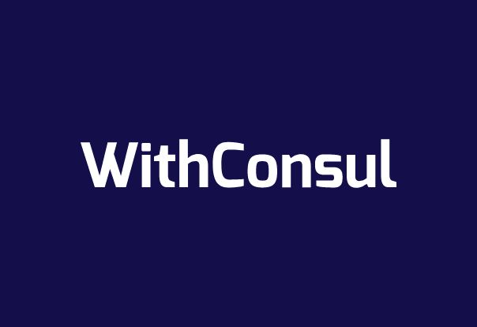
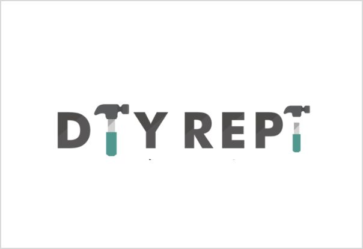

プロダクト Products
弊社では大手上場企業から中小企業も含め数多くのITコンサル案件を担当させて頂いております。内部に経験豊富なシステムエンジニアを抱え、提案から開発までを一貫して担うことができることがお客様よりご支持頂いております。
また内部でWebメディアの運営も行っており、制作から運用まで幅広い知識を取り揃えております。
ここでは一部ですが弊社で取り扱ったことのある案件をご紹介させて頂きたいと思います。ITコンサルだけ、開発の部分だけ、トータルでの相談などお気軽にお問合わせ下さい。
特長 Features
-
01. コンサルタントの多様性
大手コンサルティングファーム出身者はもちろん、ベンチャー出身者やSI出身者など多様なバックグラウンドを持つコンサルタントが在籍しております。 ビジネス課題に応じて、経営戦略・マーケティング戦略・人事戦略といった上流から、業務構築・改善/システム導入・運用といった下流までの一気通貫したご提案が可能です。
-
02. 自社ビジネスを持つことの強み
弊社はコンサルティング会社でありながら、複数の自社ビジネスを展開しています。自社ビジネスを展開する中で培ったノウハウや経験を持つ強みを活かして、ビジネス課題を真に解決するための提案、より顧客ニーズに基づいたソリューションをご提供することが可能です。
-
03. プロジェクトにマッチした人材のアサイン
弊社のフリーランスデータベース（WithConsul）にはコンサルティングファームでの経験者もしくはそれに準ずる経験を有するコンサルタントが多数登録されています。プロジェクトの要求レベルにあったプロフェッショナルなコンサルタントが貴社ビジョンの実現をお手伝いします。
サービス Service
- TOB向けサービス
-
全社成長戦略策定支援 / マーケティング/セールス戦略策定支援 / 海外市場新規参入戦略策定支援 / 組織・人材改革支援 / M&A戦略策定・実行支援
導入事例- AI活用による事業戦略構想・策定支援
-
- プロジェクト期間
- 約16ヶ月
- プロジェクト業界
- 国内大手電機メーカー （売上高数兆円程度/従業員数十万）
- 弊社の役割
- AI技術の市場調査（技術革新動向、普及状況他）・新規参入するターゲット市場の分析の上、自社製品/技術の提供価値の見極め、新サービスの効率的な市場展開に向けた事業戦略を策定し左記実現にあたっての短期・中長期のロードマップ定義を支援
- クライアントが得た効果
- 将来的に収益事業の柱となることが期待されるサービスのスピーディーな開発・リリース
- 新サービスの事業戦略策定支援
-
- プロジェクト期間
- 約10ヶ月
- プロジェクト業界
- 総合空調及び家電製品の開発・製造・販売 （売上高約6,300億円程度/従業員数約7,600名）
- 弊社の役割
- クライアントにおける新サービス検討にあたり、市場構造の明確化・業界におけるポジショニング定義、ターゲット顧客定義、アライアンス候補企業の選定・交渉等の一連の事業戦略策定プロセスを支援
- クライアントが得た効果
- ビジネスアイディアから新サービスの短期間での具体化、5年間のROI算出の上、新事業推進の社内承認獲得
- 新規事業開発におけるM&Aの一気通貫での支援
-
- プロジェクト期間
- 約12ヶ月
- プロジェクト業界
- 国内大手金融機関 （売上高約11,300億円程度/従業員数約8,200名）
- 弊社の役割
- 新たな収益の柱となることが期待される新規事業戦略策定を起点とした、買収候補企業の選定・交渉プロセスを幅広くサポート、且つ、当該ディール後の早期の業務・システムの統合を支援
- クライアントが得た効果
- 連結売上高約10%増加、営業利益7%増加に貢献する対象会社の買収完了、及び当該ディール後の円滑な統合の実現
- 経理業務グローバル・シェアードサービス・センター（SSC）化支援
-
- プロジェクト期間
- 約12ヶ月
- プロジェクト業界
- 国内大手金融機関 （売上高約11,300億円程度/従業員数約8,200名）
- 弊社の役割
- 新たな収益の柱となることが期待される新規事業戦略策定を起点とした、買収候補企業の選定・交渉プロセスを幅広くサポート、且つ、当該ディール後の早期の業務・システムの統合を支援
- クライアントが得た効果
- 連結売上高約10%増加、営業利益7%増加に貢献する対象会社の買収完了、及び当該ディール後の円滑な統合の実現
 TOC向けサービス
TOC向けサービス-
IT戦略策定支援 / システム開発プロジェクト推進・管理支援 / システムアーキテクチャ検討・構築支援 / IT組織・人材・ベンダ育成管理・構築支援 / ITリスク・情報セキュリティ・BCP対策支援
導入事例- AI活用による事業戦略構想・策定支援
-
- 基幹システム刷新の支援
- 約36ヶ月
- プロジェクト業界
- 国内大手 不動産建設・販売業 （売上高約5,400億円程度/従業員約12,000名）
- 弊社の役割
- システムコンサルタントとしてクライアント/マルチベンダから成る大規模な混成チームの中心的な立ち位置としてクライアントとの業務整理、システムのアーキテクチャ設計、開発/テストのリード及び、運用の設計等を支援
- クライアントが得た効果
- 開発マイルストーン・リリースタイミングを順守した上でクリティカルな障害なく基幹システムの刷新に成功
- 業界初の商品販売に伴う新業務/システム導入支援
-
- プロジェクト期間
- 約30ヶ月
- プロジェクト業界
- 外資系金融機関 （売上高約450億円程度/従業員約1,000名）
- 弊社の役割
- クライアントとの混成チームのPMOとしてM3（Mover Management Method）に基づく管理業務（スケジュール・コスト・課題・リスク管理他）に加え、プロジェクト進捗のクリティカルパスにある各チーム（業務部門/システム部門）のタスク遂行を強力にバックアップ
- クライアントが得た効果
- ビジネスアイディアから新サービスの短期間での具体化、5年間のROI算出の上、新事業推進の社内承認獲得
- 社内ITサービス・社内ITインフラ導入・構築・運用支援
-
- プロジェクト期間
- 約24ヶ月
- プロジェクト業界
- 独立系資産運用会社 （従業員約50名（*グループ計））
- 弊社の役割
- 暫定的なCTOとして社内ITサービスの導入・運用、社内ITインフラの構築・運用、情報資産の管理、 ISMS（ISO/IEC 27001）の認証取得、コーポレートサイトの制作・保守運用などIT関連業務を包括してリード
- クライアントが得た効果
- システム基盤の短期間での構築を通じた全社的な情報セキュリティの強化・全社規模での業務効率の向上・ユーザー満足度の向上を実現
- 新規Webサービスのグロース
-
- プロジェクト期間
- 約6ヶ月
- プロジェクト業界
- 独立系資産運用会社 （従業員約50名（*グループ計））
- 弊社の役割
- クラウドファンディングサービス立ち上げに伴うマーケティング業務を支援。マーケティング戦略設計からオンライン/オフライン広告運用や代理店の選定・ディレクション迄広範囲な領域を一貫して担当
- クライアントが得た効果
- リリース後4ヶ月で5,000名の会員獲得・累計15億円調達完了等、マーケティング戦略とKPIに基づいた広告運用/改善でスピーディーなサービスローンチに成功
運営メディア Media
-

WithConsul
弊社のフリーランスデータベース（WithConsul）にはコンサルティングファームでの経験者もしくはそれに準ずる経験を有するコンサルタントが多数登録されています。
WithConsul
プロジェクトの要求レベルにあったプロフェッショナルなコンサルタントが貴社ビジョンの実現をお手伝いします。 -

DIYREPi
見れる・作れる・変える・教わるを実現した日本最大のDIY総合サービス。
DIYREPi
DIYレシピを中心に、豊富なコンテンツでDIYをトータルサポートいたします。
DIY・ハンドメイド・収納などのレシピ（作り方）やアイデア実例が満載。